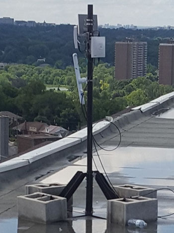
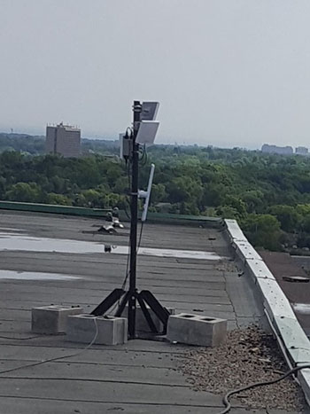
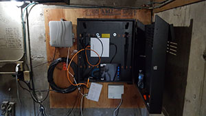
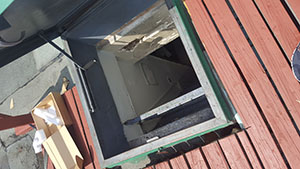
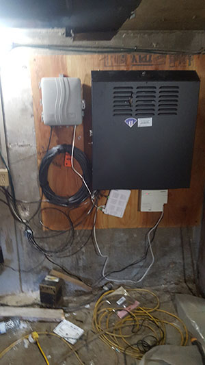
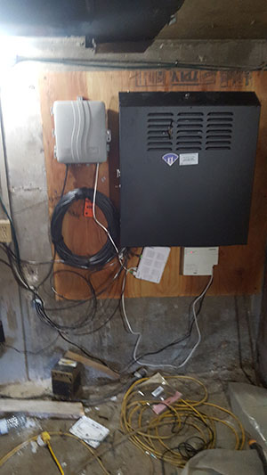

Notice
This documentation is still in progress. Come help here!
Supernode 1

Supernode 1 is located on top of 200 Woolner Ave, Toronto, alongside Cisco-deployed infrastructure belonging to the City of Toronto.
Network
The supernode consists of 2 antennas and a router. The router is connected to the Cisco switch which is connected to the Bell 2000 modem that offers internet access for use as a gateway path.
The router acts as a Babel routing device. The antennas are configured in bridge mode.

Hardware
Antenna 1
Antenna 1 is a Ubiquiti LAP-120 mounted on the west arm of the building, on the south side of the roof, colocated with Cisco on their mounts. The antenna is facing south.

Antenna 2
Antenna 2 is a Ubiquiti LAP-120 mounted on the south arm of the building, on the east side of the roof, colocated with Cisco on their mounts. The antenna is facing east.

Router 1
Router 1 is a Ubiquiti EdgeRouter X-SFP mounted inside the Cisco cabinet in the ballast room. It's connected to the exit node over a L2TP tunnel using UDP.
Router is configured with a static IP and only routes to the exit node and a secondary VPS server. The secondary VPS is used to provide an OpenVPN tunnel for secure remote management of the device.

Physical Environment
The roof is accessible through ceiling hatches on the top floor of the building.

The router is installed in a black metal cabinet, located on the back wall of the ballast tank room on the roof. This room is accessible only from the roof. The entrance is on the east wall of the elevator hut. The doors are shorter then normal.
Network cables are run through a hole in the east wall.
 

Neighbourhood Testing
Testing was done at several points that had line-of-sight to the antenna. The antenna was hand-held, not tuned precisely. Results are for reference only, and don't necessarily represent what a permanent deployment could attain at that distance.
| Point | Distance (m) | Ping | Speed RX/TX (Mbps) | Signal (dBm) |
|---|---|---|---|---|
| a | 200 | 4.57 | 86/194 | -64 |
| b | 200 | 2.86 | 80/194 | -60 |
| c | 237 | 5.82 | 50/17s | -58 |
| d | 270 | 5.27 | 103/14s | -50 |
| e (1) | 396 | 5.11 | 83/172 | -58 |
| f | 2520 | 4.57 | 8.68/1.6 | -81 |
| f (2) | 2520 | 4.57 | 64.58/40.79 | -74 |
(1) Used both Nanostation AC (Loco5AC) and LiteBeam AC (LBE‑5AC‑23). Both performed the same.
(2) Second attempt done after correcting issue with sn1a2.
Additional Notes
EdgeRouter X-SFP doesn't accelerate traffic over tunnels. Due to this, speeds are currently limited to around 400Mbps to exit node.
Managing Secrets
The purpose of this document is to provide information to contributors on how to store and view the Toronto Community Network's "secrets", such as passwords, keys, credentials, and other information kept private for security reasons.
Introduction
The Toronto Community Network uses Bitwarden to share and manage secrets across the organization. Bitwarden is a free and open-source password management service that stores sensitive information (such as website credentials) in an encrypted vault.
Bitwarden supports the following clients:
- Desktop (Linux/MacOS/Windows)
- Web Browser (Chrome/Safari/Firefox/Vivaldi/Opera/Brave/Edge/Tor Browser)
- Mobile (Android/iPhone)
- Command Line (via NPM)
For more information about supported clients, see Bitwarden's download options.
Accessing Secrets
The Toronto Community Network is using the self-hosted version of Bitwarden, and can be accessed at https://pass.tomesh.net.
For secrets to be shared, they must exist within the Toronto Community Network organization.
When using the Bitwarden applications, please make sure to change the Server URL in the Bitwarden settings to the https://pass.tomesh.net.
Obtaining Access
Obtaining access to Bitwarden is a 4-step process.
-
Send an email to operations@tomesh.net with the following information:
- Your Name
- GitHub Handle
- Detailed description of your use case or requirement.
-
A member of our Project Operations team will invite you to Bitwarden.
- Bitwarden will send you an email from tomeshnet@gmail.com
- Please make sure to whitelist the email address.
-
Use the link in the invitation to create an account.
-
After registration, Bitwarden requires us to confirm your account. Upon confirmation, you will have access to the organization.
We recommend that you setup two-factor authentication on your account to increase the security of your account.
Access Control
When storing credentials, you must store them within the Toronto Community Network organization. Bitwarden organizes secrets in groups called Collections and within those Collections are four User Types: User, Manager, Admin, and Owner.
In order to maintain integrity of the Toronto Community Network operations, most users will be granted only User or Manager access. The Project Operations team will determine your access based on your use case or requirements.
Storing Secrets
All secrets must be attached to a Collection to faciliate access control. Please be sure to attach the secret to an existing Toronto Community Network Work Group. These collection names start with _OU.
Additional Collections may be created or utilized to classify the secret such as Social, Service Accounts, Website, and more.
When naming your credential, please use the following convention: System/Function - Identifer.
For example:
- A public SSH key may be named "Public Key - Contributor A"
- A GitHub deployment key may be named "GitHub - Deploy Key (docs.tomesh.net)"
- A shared login social media may be named "Twitter - tomeshnet"
When determining a password or passphrase, please use strong entropy to prevent unauthorized access. For more information, please see our Recommended Best Practices below.
All public keys and private keys must be saved as Secured Notes.
Please be mindful that secrets stored in this system can be accessed by any authorized contributor in the Toronto Community Network. While your connection to the system is secured via TLS, the secrets you choose to store in the group can be seen by others. Please refrain from using the system for storing any personal information.
For more information about managing items, please see Bitwarden's offical documentation on Managing Items.
Data Backup
The VM that hosts the Bitwarden container is backed up on a weekly basis.
Administrators of the Toronto Community Network organization have the ability to export the entire vault to a JSON or CSV file.
As the export function provides secrets in clear-text, please secure or encrypt the file immediately.
Recommended Best Practices
The Government of Canada's Canadian Centre for Cyber Security provides recommendations for organizations to protect networks, systems, and information. By using these best practices, you can protect yourself and the integrity of the Toronto Community Network.